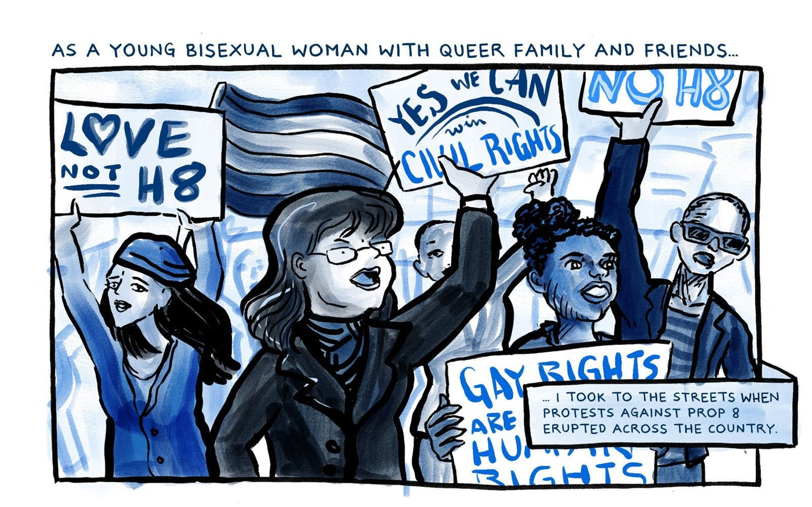
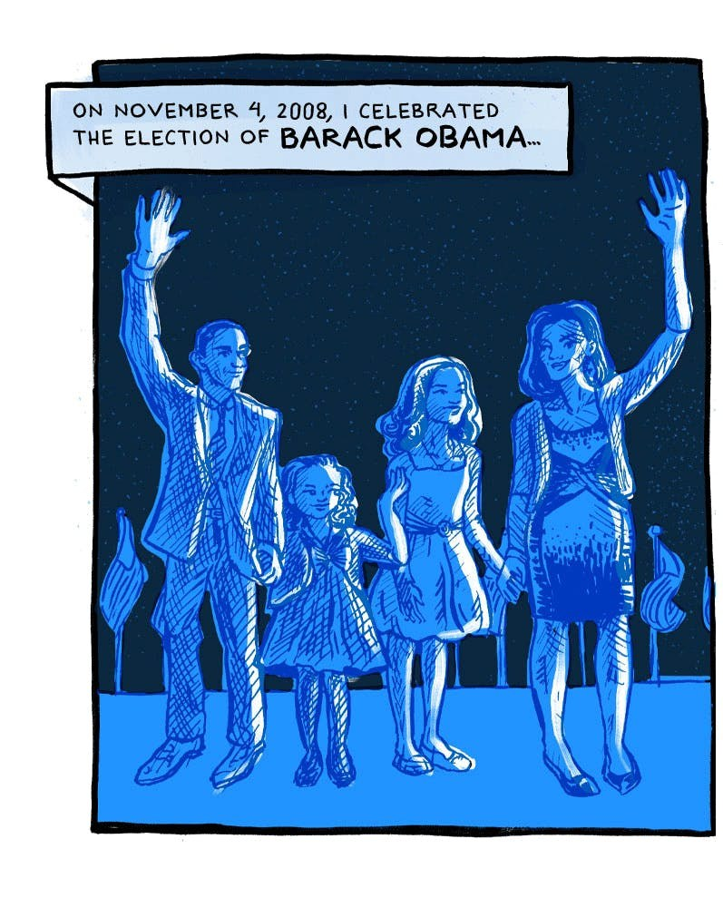
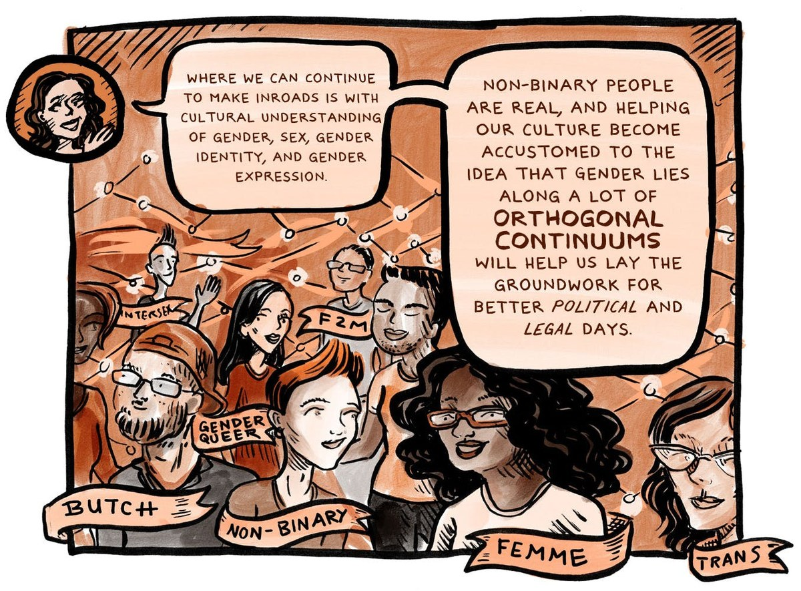
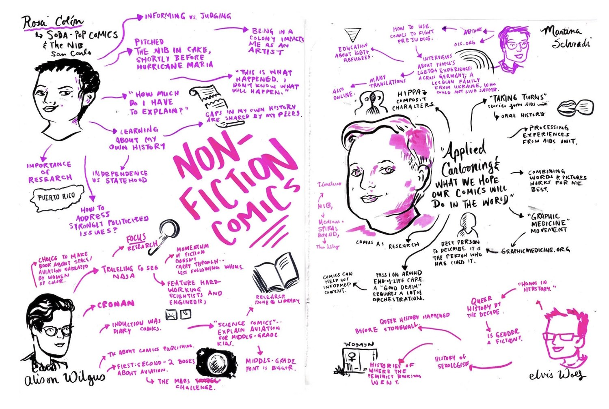

Comics journalism: reporting that gets drawn
Reporting is a comprehension problem before it is a writing problem. I have spent a decade solving it by drawing, for outlets that fact check and editors who send work back.
what this is
Comics journalism means reporting a story and then drawing it, so the reader gets the reporting and the scene at once. It is the discipline underneath everything else on this site. The habit of finding the one sentence a complicated subject actually turns on, and then making that sentence visible, is what I do whether the subject is a bar closing, a Supreme Court decision, or how a large language model gets trained.
I have been edited, published, reviewed, and named a favourite of the year. That matters here for one specific reason: it means the work has already survived people whose job was to say no.
where it ran
- The Lily, The Washington Post’s feminist project. Seven reported comics, art directed by Rachel Orr. The Lily named me one of its favourites of the year twice, in 2018 and 2019. The 2018 round-up covered more than 70 female artists; the 2019 one ran under the headline about comics that tackled mental health, menstruation and everything in between. Both sit behind the Post’s paywall.
- The Nib. "It’s Been a Decade Since Prop 8. Marriage Equality Isn’t Enough," written and illustrated, 2020.
- The Comics Journal. Five pieces. Three live-scribing reports from the Queers and Comics Conference at the School of Visual Arts in 2019: Non-Fiction Comics and Comics Journalism, Long Form Comics, and Nicole Georges and Mariko Tamaki in conversation. Plus two 2015 conference reports that carry my drawing and name me by name.
- HuffPost. "Why I Create Bisexual Comics," a personal essay under my byline, 2017.
The public index of the reported work is muckrack.com/elizabeth-beier.
the lily, at the washington post
Seven reported comics for The Lily, art directed by Rachel Orr. Each one is built the same way: report it, find the single idea the piece turns on, then draw it in two colours so the structure is visible before a word is read.
Named a favourite of the year twice, in 2018 and 2019. The first round-up drew from more than 70 female artists.


Shown with the outlet credited. The full pieces are at thelily.com and behind the Post’s paywall.
from the work



live scribing, published by the comics journal
Drawn in the room at the Queers and Comics Conference and published as reporting, which is the point where the facilitation practice and the journalism become the same job.


the books
- The Big Book of Bisexual Trials and Errors. Northwest Press, 2017, 216 pages. The Advocate named it one of the best LGBT graphic novels of 2017. It grew out of "I Like Your Headband," the autobiographical comic that won the 2016 Prism Comics Queer Press Grant.
- We Belong: Collected Stories and Portraits from the Lexington Club. An 80 page graphic memoir of the final days of San Francisco’s famous dyke bar, built from conversations with more than 100 patrons. Reported the slow way, one person at a time.
- What Will You Do If Trump Wins? An Interactive Pick-Your-Path Adventure. By Daniel Hunter, illustrated by me. August 2024, 158 pages. More than 400 illustrations run across the book, the online interactive, and progressive training slides.
- ALPHABET: The LGBTQAIU Creators from Prism Comics. Anthology, 2016, 372 pages. My short comic "V is for Virginia," about Virginia Woolf.
what the reviews said
the lexington club, in the press

On the method, quoted in that piece: "It’s my standard way to break the ice. It’s an interesting way to get to know someone quickly. You’re staring at their face and you can ask them questions. It’s intimate." Later in the same article: "Like Toulouse Lautrec at the Moulin Rouge, Beier became both documentarian and participant."
also on the record
- Featured by the Comic Book Legal Defense Fund, June 2016, in "Celebrate Pride All Year with These LGBTQ Comics Creators."
- Prism Comics Queer Press Grant, 2016, a juried publishing grant, announced at ComicsAlliance.
- Moth StorySLAM winner in Berkeley, which sent me to the Moth GrandSLAM at the Castro Theatre in front of 1,200 people. The winning story is on video.
- A RADAR reading at the San Francisco Public Library, published on the library’s own channel.
- Podcast guest on That Girl with the Curls, episode 104, December 2017.
why an employer should care
Every one of these is the same skill in a different costume: take something dense, find what a reader needs first, and build a version they will finish. A newsroom paid for that skill. So does a research organisation with a hard idea to explain, and so does a marketing team whose product is complicated.
a note on the artwork here
Everything on this page is shown with its outlet credited and linked. Panels are excerpts, chosen to show approach rather than to reproduce a whole piece; the full comics live at their publishers.
open to communications, content and editorial roles
Let’s talk.
Remote, or Albuquerque and hybrid. If you have something complicated that has to land with people who are not paid to care, that is the work I want.